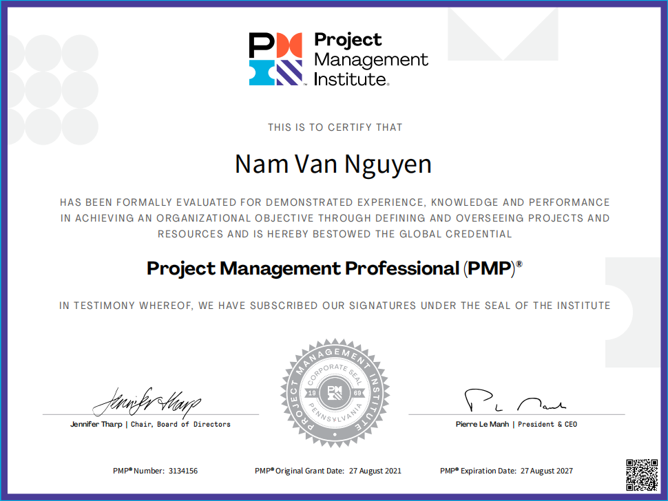

Hi! I'm VAN NAM NGUYEN,a software engineer committed to crafting innovative solutions that tackle intricate challenges with technology.
"Explore passions, unleash creativity."
Portfolio
I am an IT professional with years of experience working for various large and small companies. Below is a list of the companies I have worked for.
JANUARY 2023 – PRESENT
SOFTWARE ENGINEER in Jung Talents, Australia
I implemented the CompareNSave project for Home Loan products with leading Australian lenders such as Westpac, ANZ, AMP, NAB, and CBA using StoryBlok, Next JS, and Google Cloud Platform. Additionally, I developed PTEMaster, a web application for English study, featuring practice and mock testing, using NestJS, AngularJS, and AWS.
OCTOBER 2021 – OCTOBER 2022
SENIOR SOFTWARE ENGINEER / TEAM LEADER in VMO Holdings Technology, Hanoi, Vietnam
I designed Luxurique, a comprehensive travel platform with booking, itinerary, and services using NestJS, Next.Js, MySQL, and AWS. Additionally, I led an Agile team to implement an IoT Devices Management System for production lines with Java 11, Spring Boot, Spring Cloud, and AWS.
SEPTEMBER 2016 – OCTOBER 2021
SOFTWARE ENGINEER / TEAM LEADER in Yumeshin Holdings, Hanoi, Vietnam
I led a software solutions team responsible for developing and maintaining in-house products, including a Japanese Examination web app, Health Challenges web app, and a Workforce Management System. Additionally, I managed a Java back-end team for the MinFX Social Trading platform, focusing on feature development, bug fixes, and operational efficiency. I also developed a service to generate and send trading reports using Spring Batch and Jasper Report, earning the Best Performance award in 2020.
MARCH 2014 – SEPTEMBER 2016
JAVA DEVELOPER in Nextop Asia, Hanoi, Vietnam
I integrated VFX and CitiFX FIX gateways for currency trading using Java and FIX protocol. Additionally, I developed a money reconciliation service to monitor transactions and detect discrepancies. I streamlined operations by integrating the Account Management System with Salesforce CRM via RESTful API, resulting in improved efficiency and a 5% increase in customer retention. Lastly, I maintained and enhanced various back-end services of trading platforms, including order propagation and batch processing.
About Me
I possess a diverse range of technological skills, accompanied by a high level of educational attainment.
EDUCATION
I earned my Master of Computer Science degree from the Posts and Telecommunications Institute of Technology in Hanoi, Vietnam, graduating in 2014. Prior to that, I completed my Bachelor of Information Technology with a major in Software Engineering from the same institute, graduating in 2012.
Certificate Project Management professional (PMP)
TECHNICAL SKILLS
I am proficient in various programming languages including Java, JavaScript, and SQL. My expertise extends to front-end frameworks such as AngularJS, Next.Js, jQuery, and Bootstrap. On the back end, I have experience with frameworks like Hibernate, MyBatis, Struts 2, Spring Boot, Spring MVC, Spring Batch, and NestJS. I am well-versed in working with databases such as MySQL, PostgreSQL, Oracle, and Redis.
In cloud technologies, I am familiar with AWS services including S3, EC2, RDS, Redshift, DynamoDB, IoT Core, Kinesis, and Timestream, as well as GCP. Additionally, I have experience with CI/CD tools like Jenkins and Maven, logging tools such as Jog4j, Logback, and SLF4J, and testing frameworks like JUnit, TestNG, Postman, and Mockito. I am proficient in data modeling with ER diagrams and data flow diagrams, and I am experienced in version control systems like Git and SVN. Moreover, I am skilled in using JIRA/Confluence, Protocol Buffer, FIX Protocol, RESTful API, and Swagger for various projects.
Contact
You can reach me via email at "namnguyenvan@live.com", or by phone at 0466 223 456. I am currently based in Adelaide, South Australia. Feel free to connect with me on LinkedIn as well.